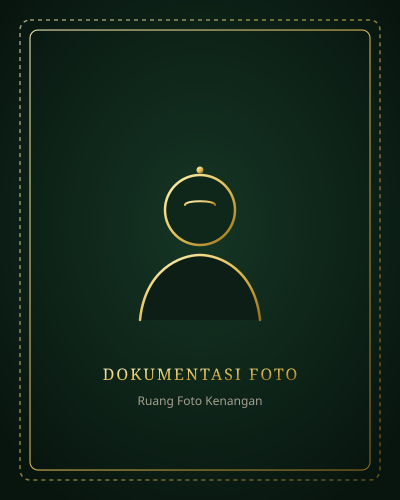

Example Putri
kaliyan
Example Putra
Pambuka & Donga Suci
وَمِنْ ءَايَٰتِهِۦٓ أَنْ خَلَقَ لَكُم مِّنْ أَنفُسِكُمْ أَزْوَٰجًا لِّتَسْكُنُوٓا۟ إِلَيْهَا وَجَعَلَ بَيْنَكُم مَّوَدَّةً وَرَحْمَةً ۚ إِنَّ فِى ذَٰلِكَ لَءَايَٰتٍ لِّقَوْمٍ يَتَفَكَّرُونَ
“Lan ing antarane tandha-tandha panguwasa-Ne, Panjenengane nitahake kanggo sira garwa saka jinising sira dhewe, supaya sira rumangsa ayem tentrem ana ing sandhinge, lan Panjenengane ndadekake ing antarane sira rasa tresna lan asih. Saktemene ing bab iku ana tandha-tandha tumrap wong-wong kang mikir.”
“Rukun agawe santosa, nggayuh gesang mulya linambaran tresna asih kang tulus. Memayu hayuning kulawarga miwah bebrayan agung, sumungkem dhumateng Gusti Kang Akarya Jagad.”
Panganten Kekalih
Nyuwun donga pangestu dhumateng para sesepuh, pinisepuh, saha panjenengan sedaya awit dhaup sucinipun putra-putri kawula:
Lampahing Tresna
Lumampahing katresnan suci ingkang pinaringan margi dening Gusti Kang Maha Kawasa:
Pepanggihan ing Pelataran Keraton
Kala samanten ing upacara Sekaten Kagungan Dalem Keraton Ngayogyakarta, manah kekalih kapanggihaken ing satunggaling pirembagan kabudayan Jawi. Wiwit dinten punika, katresnan tuwuh kanthi alus lan tulus.
Nyuwun Pangestu Kulawarga
Kanthi nyenyuwun sih wilasa dalem Gusti Allah, kulawarga ageng pepanggihan wonten ing Ndalem Hardjodiningratan saperlu ngrembag paseduluran lan nyawijikaken sedya suci tumuju ing bale wisma.
Janji Suci Dhaup Keraton
Pinaringan nugraha lan berkah, kekalihipun badhe ngucap janji suci ing ngarsanipun Gusti Kang Maha Agung, nyawiji lahir batos dados kulawarga ingkang ayem, tentrem, lan pinaringan kamulyan.
Rangkaianing Upacara
Kanthi hangajab berkahing Gusti Allah SWT, adicara pahargyan badhe kalampahan ing:
Siraman & Midodareni
ꦱꦶꦫꦩꦤ꧀ꦭꦤ꧀ꦩꦶꦢꦺꦴꦢꦫꦺꦤꦶIjab Qabul (Akad Nikah)
ꦲꦏꦢ꧀ꦤꦶꦏꦃPahargyan Temanten (Resepsi)
ꦥꦲꦂꦒꦾꦤ꧀ꦠꦼꦩꦤ꧀ꦠꦺꦤ꧀Sesi II (Kirab Keraton): Tabuh 18.30 – 21.30 WIB
Papan Panggenan
Peta lan petunjuk margi tumuju Kagungan Dalem Keraton Ngayogyakarta Hadiningrat:
Bangsal Pagelaran Keraton Ngayogyakarta
Pelataran Kagungan Dalem Kraton, Jl. Rotowijayan, Panembahan, Kecamatan Kraton, Kota Yogyakarta, Daerah Istimewa Yogyakarta 55131
Petunjuk Arah (Google Maps GPS)Tata Busana & Unggah-Ungguh
Kagem kaselarasan swasana pahargyan Kraton, keparenga hangagem busana kanthi tata krama:
Busana Kakung (Pria)
Hangagem Beskap Jawi Jangkep / Surjan / Batik Lengan Panjang khas Ngayogyakarta Hadiningrat kanthi dhuwung/keris saha blangkon gaya Mataram Ngayogyakarta.
Busana Putri (Wanita)
Hangagem Kebaya Tradisional / Modern kanthi nuansa Ijo Gadung (Emerald Green), Prada Emas (Gold), utawi warna Earth Tone ingkang luwes lan anggun.
Kanthi ngurmati pranatan Kagungan Dalem Keraton Ngayogyakarta, para tamu dipun suwun kersaa mboten hangagem motif bathik larangan (kados ta Parang Rusak Barong Ageng) amargi mligi kagem Sri Sultan Hamengku Buwono.
Galeri Kagungan
Kintunan kenangan endah ingkang pinatri salebeting katresnan suci:

Kintun Tanda Tresna
Kagem panjenengan ingkang kepareng maringi tanda katresnan dhumateng pinanganten kekalih, keparenga lumantar amplop digital punika:
Kediaman Kulawarga
d.a. Bpk. Contoh & Ibu Contoh
Jl. Contoh Alamat No. 123, Yogyakarta
No. Telp / WhatsApp: 0812-0000-0000
Buku Tamu & Donga Restu
Keparenga paring konfirmasi rawuh saha donga puji pangestu dhumateng pinanganten: